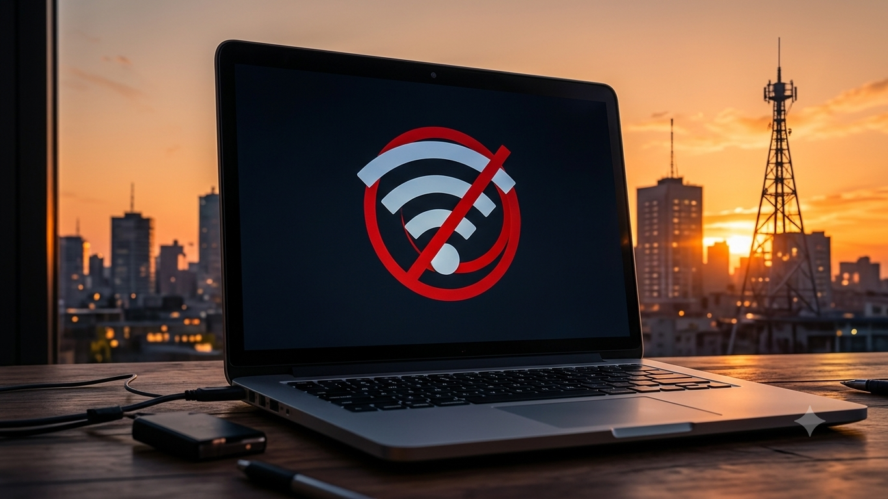
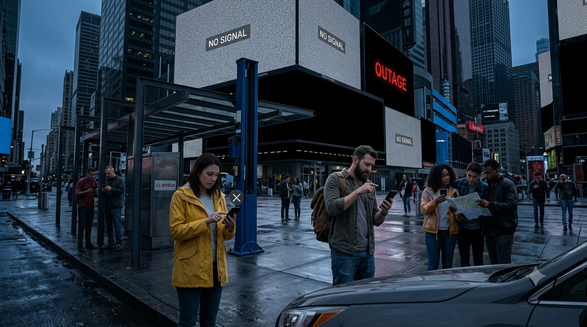
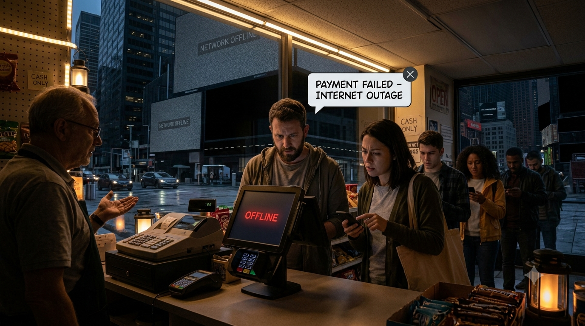
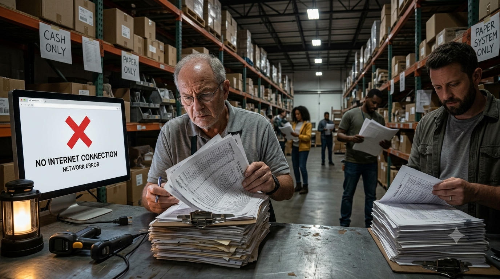
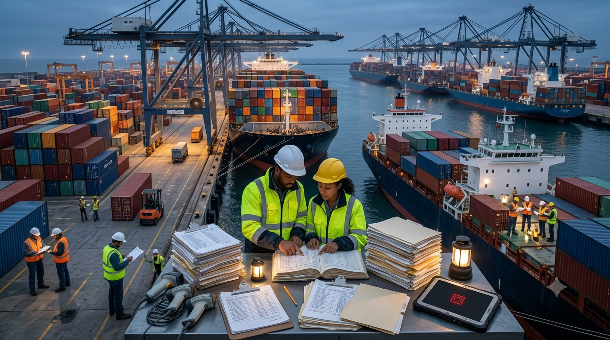

What If the Internet Stopped Working Permanently?

Imagine waking up to find that websites, messaging apps, cloud services, online banking, and mobile data no longer work. The problem is worldwide, not just your provider, and the public internet will not return.
A permanent loss would disrupt modern life, but it would not instantly erase money, switch off every computer, stop every telephone, or destroy all human knowledge. The impact would depend on which infrastructure survived and how quickly people could create alternatives.
- What the internet actually is
- The first hours
- The first few days
- Money and banks
- Stock markets and major companies
- Shipping and supply chains
- GPS and navigation
- Knowledge and digital records
- Work, healthcare, education, and government
- Everyday life
- Electricity and essential utilities
- Months and years later
- What would help people adapt?
- The long-term outcome
What Does “The Internet” Actually Mean?

The internet is a network of networks connected through physical cables, routers, wireless links, data centres, and shared technical standards. There is no single central computer that controls it all. A website outage, a cloud-provider failure, or a broken cable is not the same as the worldwide failure imagined here. Cloudflare’s guide to how the internet works explains the basic structure.
The World Wide Web is only one service that uses the internet. Email, messaging, video calls, online games, cloud software, and many business systems also rely on internet connectivity. Losing the public internet would therefore affect much more than websites.
Local networks could still function. A hospital, factory, school, or office might keep its internal computers connected even when it cannot reach the outside world. Some organisations also use dedicated private links. The result would be a patchwork: systems that continue locally, systems that lose essential data or support, and systems that cannot communicate with partners.
The First Hours: Confusion, Failed Payments, and Lost Contact
At first, people would assume their Wi-Fi, mobile data, or provider had failed. As reports arrived from other regions, it would become clear that the problem was much larger. Websites, internet messaging, cloud services, online maps, and many login systems would become unreachable.
Messages sent through internet apps, webmail, and video calls would not arrive. Ordinary calls, SMS, radio, television, and satellite phones might remain available, but none is guaranteed: some voice services use internet-based infrastructure, and networks can share power, towers, and backhaul connections. Official announcements would need to use whatever channels still worked.
Card payments and online purchases requiring live authorisation could fail. Some systems have limited offline-payment capability, but it is not a universal substitute. Cash would become useful immediately, while local files and software that do not require remote login could continue working.

The First Few Days: A Crisis of Coordination
The deeper problem would be coordinating people, goods, and records. A warehouse might still contain stock and a truck might still be roadworthy, but staff could lose access to current orders, inventory, delivery addresses, and supplier information.

Modern services rely on accurate information about ownership, schedules, payments, routes, and demand. Some organisations could switch to phone calls, radio, private links, and paper records. Others would slow down or suspend operations until they could verify what was safe and reliable.
What Happens to Money and Banks?
Your bank balance would not automatically disappear. It is a record maintained in financial systems, not simply a number stored on a banking website. If a bank’s records and internal systems survived, the underlying account could still exist even if customers could not access it through an app.
The difficulty would be making payments, transferring funds, checking identities, reconciling transactions, and connecting banks with merchants and payment networks. Not every financial message travels over the public internet; some institutions use dedicated networks. But that would not guarantee that domestic card payments, ATMs, clearing, or settlement could continue normally.
Cash becomes important again
Cash lets a buyer and seller exchange value without asking a remote server to approve each transaction. It is not unlimited: ATMs need power and replenishment, shops need change, and businesses need ways to record and protect their receipts. People who rely almost entirely on digital payments would be particularly exposed.
Over time, banks and local businesses might use branch-based services, written receipts, vouchers, or trusted account ledgers. Such systems would only work if people trusted the records and could reconcile them later. The Bank for International Settlements’ handbook on offline payments explores some of the challenges involved.
What Happens to Stock Markets and Billion-Dollar Companies?
Stock markets depend on market data, brokers, exchanges, clearing, settlement, and secure communication. Many familiar services—trading apps, price feeds, online brokerage accounts, and order confirmations—could become unavailable. Some financial institutions use dedicated connectivity, so every market would not necessarily stop at the same moment. Exchanges might suspend trading until they could operate safely and verify transactions.
A shareholding would not instantly vanish. Ownership records are held by brokers, registrars, custodians, and securities depositories. If those records and institutions survived, the underlying claim could survive even while trading was impossible. The last displayed share price would become stale, not a reliable indication of what the investment could be sold for.
Companies built around online advertising, e-commerce, search, streaming, cloud services, social networks, and app stores would face enormous pressure because their customers, distribution, payments, or products depend on connectivity. Their market valuations could fall sharply, or become impossible to update while trading was suspended.
But a company would not physically disappear. Buildings, servers, patents, brands, inventory, contracts, and skilled employees would still exist. Some businesses could shift to local servers, private networks, telephone orders, physical outlets, or offline products. Others would struggle to replace the global reach and network effects that made them valuable.
Shipping, Logistics, and Supply Chains Would Take a Major Hit
Ships, trucks, trains, aircraft, ports, cranes, and warehouses would not simply stop moving. But modern logistics relies on digital orders, inventory databases, cargo tracking, customs systems, port schedules, fleet management, and electronic documents. Without reliable information, staff may not know whether a shipment is cleared, paid for, delayed, or even expected.

Some cargo already in transit would still arrive. Crews and port workers could use radio, phones, printed manifests, local systems, and prearranged procedures. However, manual processing would increase delays, congestion, and mistakes. Perishable food, medicines, machine parts, and just-in-time supplies would be especially vulnerable.
Over time, trade would likely become more regional where possible. Businesses would hold more stock and rely on direct communication and paper records. This would make supply chains slower, less efficient, and more expensive.
Does Humanity Lose Its Knowledge?
No. The internet is a powerful way to find and share information, but knowledge also exists in books, libraries, printed manuals, university collections, local databases, downloaded files, discs, and external drives.
The real problem would be access and preservation. A file stored on a working laptop could remain available, while a document saved only in a cloud account might become unreachable. Hospitals and universities might retain local databases, but lose access to remote services, shared research, and updated information.
Digital files also depend on working hardware, software, passwords, and readable formats. Storage media fail and formats become obsolete. The Library of Congress discusses long-term digital usability: preserving a file is not enough if future users cannot open it.
Libraries, schools, universities, and technical institutions would become important centres for preserving usable knowledge. Printed medical and engineering manuals, textbooks, maps, repair guides, and offline reference collections would be valuable alongside carefully maintained digital archives.
Work, Education, Healthcare, and Government
Jobs and business: Remote work, cloud-based offices, online customer support, and international coordination would be hit hard. Some companies could return to offices, local networks, telephone calls, and paper files. Physical trades, transport, repair, agriculture, and in-person services would remain necessary.
Schools and universities: Online classes, learning platforms, and remote exams would fail where they depend on public internet access. Classrooms, printed materials, local computer labs, broadcast lessons, and postal correspondence could fill some gaps, but access to specialist resources would become more unequal.
Healthcare: Hospitals would not automatically stop treating patients. Staff, medical equipment, local records, and paper charts could remain available. However, online appointments, referrals, prescriptions, lab systems, remote specialist advice, insurance approvals, and cloud-hosted records could be disrupted. The International Committee of the Red Cross has documented how connectivity disruptions can affect access to medical support, financial resources, and essential information.
Government: Online tax filing, licence renewals, benefit applications, digital identity checks, and public records could become difficult to access. Local offices might use paper and internal systems, but queues and processing delays would grow.
Everyday Life Would Change in Ways We Often Overlook
Streaming, social media, online shopping, rideshare apps, food delivery, and online gaming would disappear wherever they depended on the public internet. Downloaded music, films, books, offline games, and physical media could still work.
Smart-home devices might lose cloud features. Cloud photo libraries, online backups, password managers, and digital documents could become inaccessible. Families living far apart would lose convenient contact, while rumours and false information could spread through whatever channels remained.
Physical shops, hotels, and local services might continue, but people would need offline ways to confirm bookings, prices, identity, and payment. Newspapers, radio, noticeboards, postal letters, and public meetings would regain importance. Small inconveniences—checking a reservation, proving identity, confirming a payment, or finding an address—would accumulate into a major daily burden.
Would Electricity, Water, and All Utilities Stop Working?
Not automatically. Losing the public internet does not switch off every generator, pump, power station, mobile tower, or industrial control system. Some essential equipment uses local automation, isolated networks, dedicated links, and controls that do not depend on public internet access.
However, utilities use communications for remote monitoring, maintenance coordination, data sharing, and support. The effects would vary by operator and by how its systems were designed. In the short term, local controls and trained staff could keep many services running. Over time, spare parts, engineering support, maintenance, and coordination with suppliers could become harder.
Emergency radio and telephone networks might continue, but they are not guaranteed backups. Some systems share power, sites, and communications links. A physical utility can operate without some online services, but it still needs energy, people, maintenance, and supplies.
Months and Years Later: A More Localised World
People would adapt, but the transition would be expensive and uneven. Schools, hospitals, factories, and government offices could rebuild local networks or use dedicated links where these remained available. Regional data-sharing systems might reconnect selected organisations without recreating the open global internet.
Businesses would keep larger inventories, rely more on direct relationships, and reduce dependence on distant suppliers they could no longer contact or verify. Some online business models would fail; others would move to physical distribution, local services, broadcast media, or offline products.
Financial institutions would need trusted ways to record and reconcile transactions. Communities might rely more on cash, written receipts, and local account ledgers. The hardest problem would be proving that a claim was genuine and deciding which record to trust when systems disagreed.
Some regions could maintain sophisticated private networks; others might rely more heavily on paper and face-to-face services. The world would not return to an identical past, but digital life would become more local, slower, and less convenient.
What Would Help People Adapt to an Offline World?
The sensible response is not to download the entire internet or panic-buy equipment. Keep the information and alternatives that would genuinely help your household or workplace:
- Some cash: Keep a reasonable amount in small denominations for short-term purchases.
- Printed essentials: Keep emergency contacts, key addresses, identification copies, insurance details, and important medical information securely.
- Offline maps: Download maps for places you travel and keep a paper map for important routes.
- Local copies: Store important documents, manuals, tickets, and reference material on a device that works without a remote login.
- Separate backups: Keep a second copy of important files on another drive or in printed form, and check that you can actually open them.
- Communication alternatives: Know local emergency radio stations and how to contact important people without messaging apps.
Refresh the information periodically. Offline maps and printed records can become outdated, and digital backups can fail. The goal is to keep essential information usable when a connection is unavailable.
Would the World End Without the Internet?
A permanent loss of the public internet would be a severe economic and social crisis, but not an instant end to civilisation. It would disrupt services that depend on global communication while leaving some local networks, equipment, records, and physical infrastructure intact.
The greatest loss would be coordination. Goods might still exist, people would still have skills, and information would still be stored somewhere—but connecting people, verifying records, moving supplies, and sharing knowledge would become much harder. Over time, new local systems would emerge, but they would be slower and less interconnected than the internet-dependent world we know.
Sources and Further Reading
This is a hypothetical scenario. These five sources explain the real systems and dependencies discussed in the article; they do not predict the exact outcome of a permanent global internet failure.
- How the Internet Works — Cloudflare Learning Center. Explains the internet as interconnected networks.
- Offline and in danger: the humanitarian consequences of connectivity disruptions — International Committee of the Red Cross. Describes impacts on essential information and services.
- Project Polaris: Handbook for offline payments with CBDC — Bank for International Settlements. Explores payment resilience without internet or telecommunications connectivity.
- GPS Frequently Asked Questions — GPS.gov. Explains the difference between satellite positioning and map data.
- Bit Level Preservation and Long Term Usability — Library of Congress. Explains why preserving digital files also requires usable formats and tools.
Suggested Quizzes
Test your knowledge of survival scenarios, fictional worlds, and preparedness.